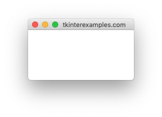

Frame
The Frame element is used to create containers for other elements -
similar to a <div> tag in html.
Empty Frame #
Frame elements do not render if empty.
This can be used as a method to create a sort of "headless" application,
but the preferable method for achieving the same is using root.withdraw().
import tkinter root = tkinter.Tk() tkinter.Frame(root).pack() root.mainloop()
On running this code we get the notification that a python program is running but no windows are displayed.
Frame with Dimensions #
If we provide dimensions to a Frame then it will render an empty window.
import tkinter root = tkinter.Tk() tkinter.Frame(root, width=100, height=100).pack() root.mainloop()
Frame with Items #
The intended use of the Frame element is to be used as the "master" for other objects.
import tkinter root = tkinter.Tk() frame = tkinter.Frame(root) frame.pack() tkinter.Label(frame, text="INSIDE A FRAME :)").pack() root.mainloop()